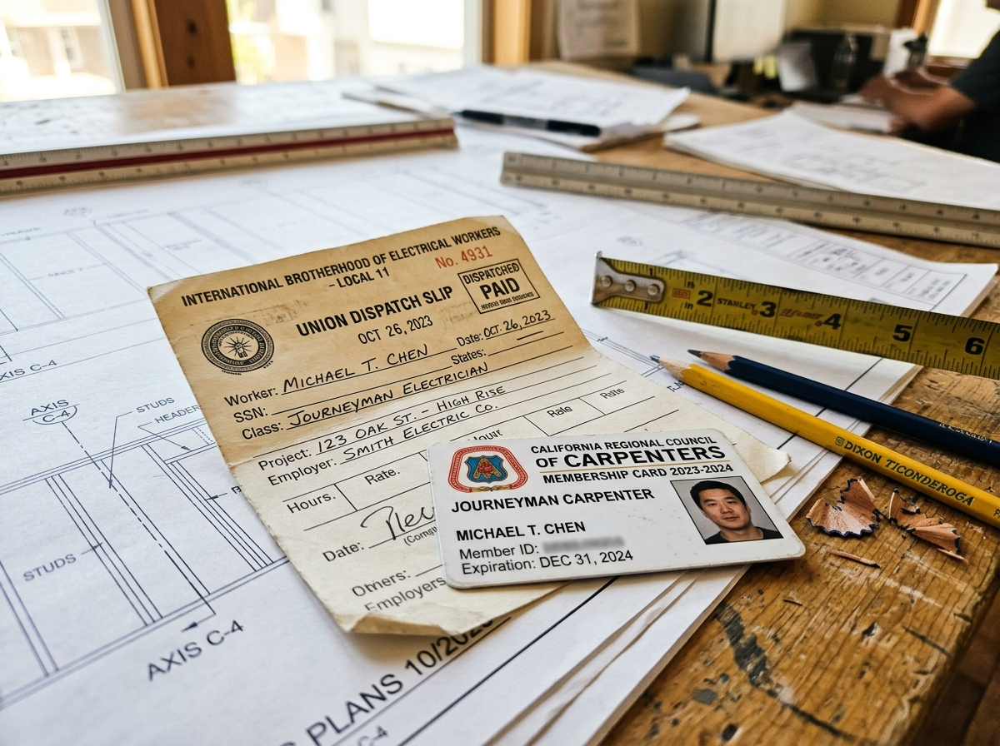

Shifting from a static, white-collar CV model to a dynamic, "Role-First" data architecture. A connected identity wallet built for the realities of the global blue-collar workforce.
Product & UX Designer • Systems Architecture
BuilderFax serves as the Apple Wallet for Workforce Identity. A free, digital credential platform designed to help construction professionals store licenses, track safety certifications, and log verified work history for instant sharing on job sites.
Commercial wiremen, pipefitters, and solar technicians rotating across 5–10 subcontractors annually under one master trade certification. Their records live in dispatch slips and W-2s.
The legacy BuilderFax app expected a white-collar solution in a blue-collar reality—funneling workers toward a PDF resume upload or forcing them into high-friction manual data entry on mobile keyboards. This fragmented data approach led to Workforce Fog: low contractor confidence regarding a worker's actual skills.
Why the legacy onboarding funnel triggered a 62% abandonment rate before workers could even reach their profile.
The onboarding screen funnels users toward an "Upload your resume" action. This creates an immediate roadblock for tradespeople who rely on physical dispatch slips instead of digital CVs. The promise of profile automation fails at the very first interaction.
The manual work experience form demands heavy typing across seven separate fields. Blank description boxes force users to recall and articulate daily tasks from memory on a mobile keyboard, directly violating the recognition over recall heuristic.
The UI utilizes a paginated year selector showing disconnected blocks like 2004 to 2015. Forcing a veteran tradesperson to scroll through paginated blocks to log a 20-year career causes massive frustration. Routing to separate screens triggers save errors.
After enduring manual setup, the app dumps the user onto the main profile page. To add a second job site, the user must navigate back and restart the exact same blank form from scratch. The system lacks any mechanism to batch projects under a single trade.
Profile › Add Experience › Type Company › Type Role › Type Trade › Type Location › Pick Date › Type Description › Save. Repeat from scratch for every past contractor gig.
1. Lock Role (Once) › Auto-Trade Map › Batch Company 1 (+Apex) › Batch Company 2 (+Skanska) with tactile calendar pickers › Instant Verified Profile.
Rather than simply putting a fresh coat of paint on a frontend form, this solution connects BuilderFax directly to the enterprise platforms where construction data already lives, intentionally bypassing the "Upload Resume" flow.
1-Tap Handshake with Lumber
The Trust Handshake: The Lumber connection modal builds immediate user trust by pulling and displaying matched data—such as specific union ID numbers, roles, and exact logged hours (1,840 Hours)—before the user ever taps to authorize the sync.
IBEW Local 46 • ID #784-2910
Offering dedicated integrations to pull US verified data from industry-standard trade platforms. The hub dynamically adapts these tiles based on device GPS to suggest relevant regional platforms:

For offline jobs, cash gigs, or older union records, users snap a photo of physical union dispatch slips, apprenticeship tickets, or paystubs to auto-extract contractor names and dates.
Workers define their overarching trade role exactly one time. Once locked, multiple short-term job sites, contractors, and timelines are nested underneath, completely eliminating form duplication.
We replaced blank text boxes with one-tap contractor chips like "+Apex", "+Skanska", and "+Turner". This directly transforms a high cognitive load typing task into a low fatigue tapping task.
A dedicated "Estimated Logged Hours" stepper component allows users to quickly input or verify their hours, saving them from doing manual math on the job site, paired with a tactile 12-month calendar selector.
The Location field pings the device's GPS and auto-suggests the commercial build site or metropolitan city the user is currently standing in, with instant typing datalist fallback.
A high-contrast mobile design system engineered for outdoor job site glare, dirty fingers, and rapid supervisor gate verification.
A centralized zero-entry setup screen featuring high-contrast touch-friendly tiles for Lumber, Procore, ADP, NCCER, and HCSS, alongside a physical document scanner.
Step 1 (Your Role): Locks the trade classification with Existing Roles Quick Pick for returning users. Step 2 (Companies Worked): Batches new projects under that locked role using predictive contractor chips and duration pickers.
Role-Wise Output: Displays qualification badges like Journeyman Qualified (>2,000h Met) for pay grade proof. Timeline Output: Chronological rail. Share Pass Payoff: Supervisor-ready SVG QR code for job site entry.
Visualizing the quantitative transformation from the legacy linear model to the proposed Role-First batched architecture.
Comparing Current Flow vs. Proposed Flow
Tracking the percentage of users who successfully log 3 or more jobs using the new batching method versus the old single entry loop.
Measuring the reduction in seconds spent inputting data, driven by the shift from mobile keyboard typing to predictive tapping.
Monitoring the reduction in user abandonment at the critical Add Experience onboarding screen.